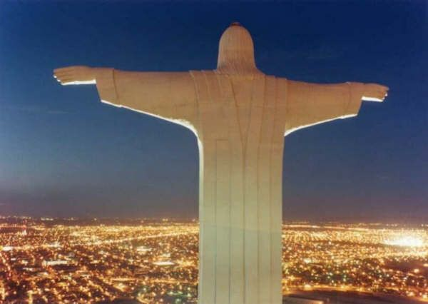

Torreon.. My hometown
Why should you visit Torreon..
What is Torreon.
Torreon is a city of contrasts... In the middle of the semi-desert you will find a great industrial development coexisting harmoniously with a colonial past preserved with the sole purpose of making you part of its history. As you walk along the old irrigation canal that takes water from the Nazas River to the lands of Hacienda la Perla, you will see in its walls the photographs that will tell you the history of the city. When you stand at the feet of the impressive Christ Noas, who awaits you with open arms, you will remember the feeling of being tiny as you turn to get a panoramic view of the Comarca Lagunera.
My experience in Torreon.
Even though I didn't live my whole life in Torreon this is the place that I have more memories of. I was born here and when I was 2 years old I moved to a smaller town called San Pedro where I spent mostly all my childhood but that's another story. I moved back to Torreon during the summer after 5th grade was over. Compared to the small town where I used to live, Torreon was a whole new world to me because San Pedro was a very poor town and Torreon is one of the 10 biggest cities of Mexico, so you can imagine how different it was for me and my family. At first everthing seemed different and strange but all the family from my mom's side lived here so they helped us know this place better. On my first day of school after 6th grade had just started I was really scared but as time went on I made friends and got used to this new form of living. I lived here since I was 11, I think, until I was 16. I had a lot of funny experiences and did a lot of crazy things throughout this 5 years such as leaving school early and go to the movie theater with my friends or joining a soccer team and much more. This is just a part of my life that I will nover forget and even though Torreon is not the best option to where you want to spend your vacations it's definitely a place you should consider.
